Animated analog spiral face · Connect IQ · Generated 2026-06-08 · SDK 9.1.0 · CIQ Simulator
Each device was built for its own target, sideloaded into the simulator, and captured as two frames 1.3 s apart. A large pixel delta between frames proves the spiral is live-rotating; a near-zero delta means it isn't rendering/animating.
| Device | Resolution | Display | CIQ | Build | Animation | Status |
|---|---|---|---|---|---|---|
fēnix 8 Pro 47mmfenix8pro47mm | 454×454 | AMOLED | 6.0 | ✓ clean | ✓ animating 85,937 px Δ | PASS |
Venu 3Svenu3s | 390×390 | AMOLED | 5.2 | ✓ 1 warn (icon scaling) | ✓ animating 68,672 px Δ | PASS |
Forerunner 265fr265 | 416×416 | AMOLED | 5.2 | ✓ 1 warn (icon scaling) | ✓ animating 75,654 px Δ | PASS |
Forerunner 265Sfr265s | 360×360 | AMOLED | 5.2 | ✓ 1 warn (icon scaling) | ✓ animating 58,371 px Δ | PASS |
Forerunner 955 Solarfr955 | 260×260 | MIP 64-color | 5.2 | ✓ 1 warn (icon scaling) | ✓ animating 30,984 px Δ | PASS |
fēnix 7Sfenix7s | 240×240 | MIP 64-color | 5.2 | ✓ 1 warn (icon scaling) | ✓ animating 26,170 px Δ | PASS |
fēnix 7Xfenix7x | 280×280 | MIP 64-color | 5.2 | ✓ 1 warn (icon scaling) | ✓ animating 36,507 px Δ | PASS |
Instinct 2instinct2 | 176×176 | MIP 2-color | 3.x | ✓ 1 warn (icon scaling) | ✗ static 26 px Δ (no spiral) | FAIL |
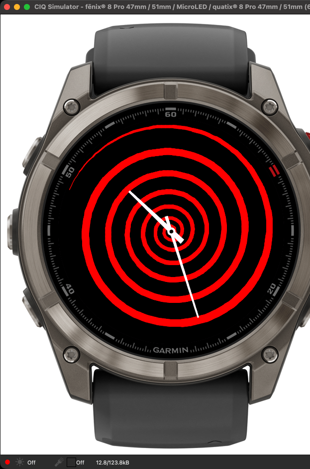
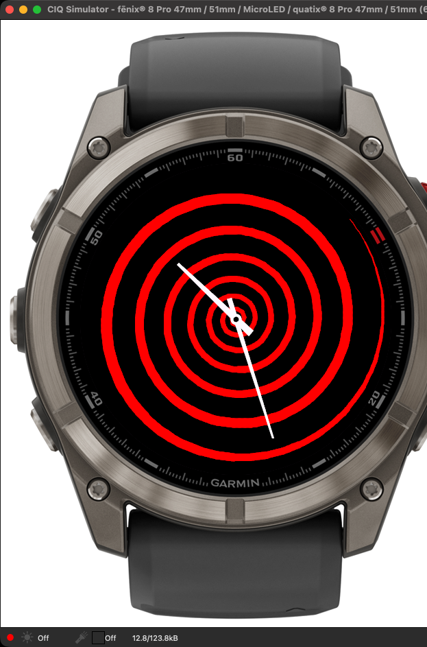
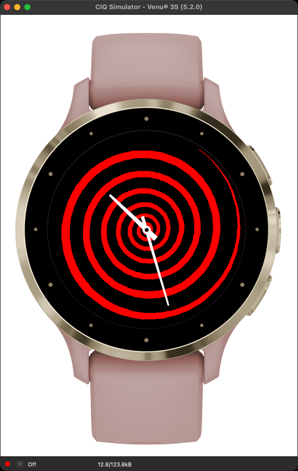
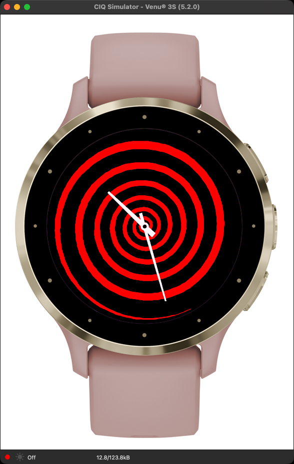
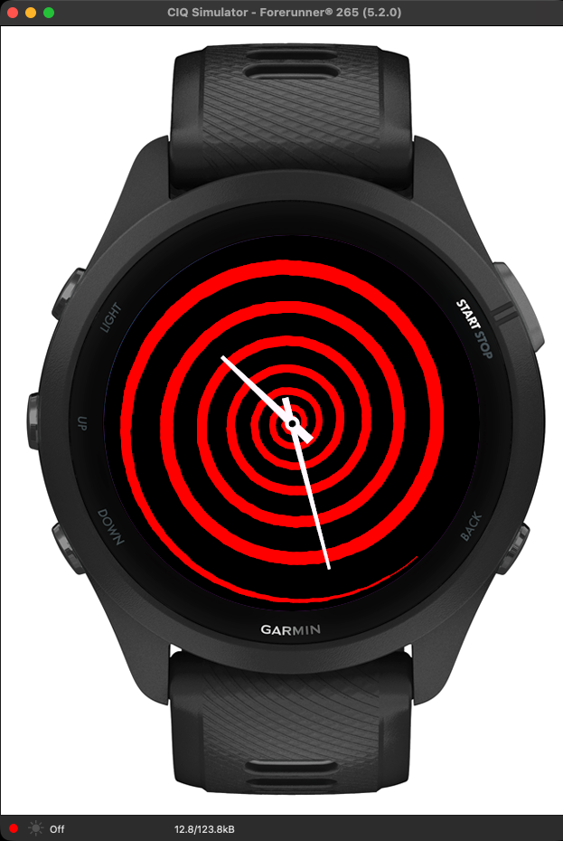
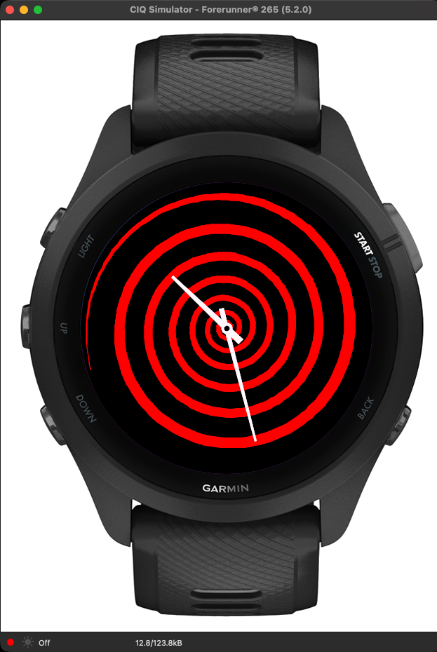
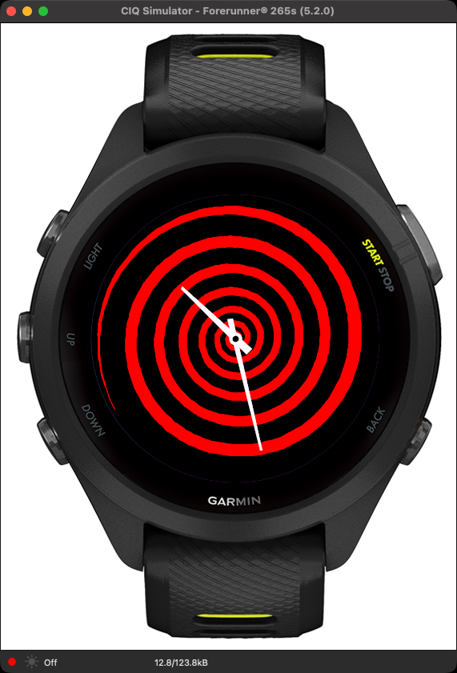
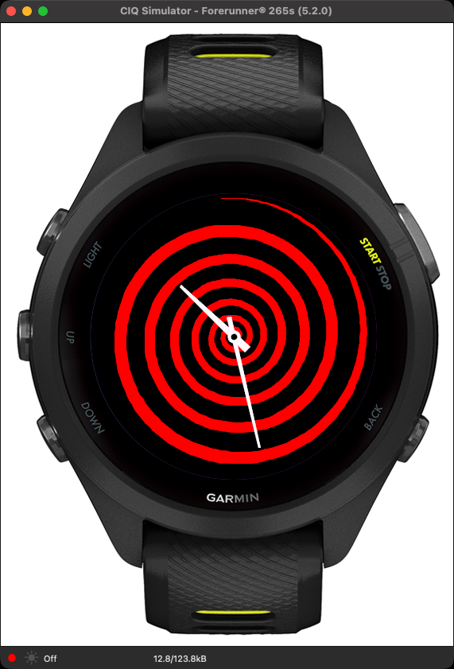
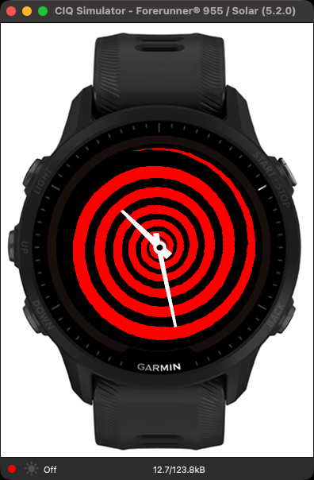
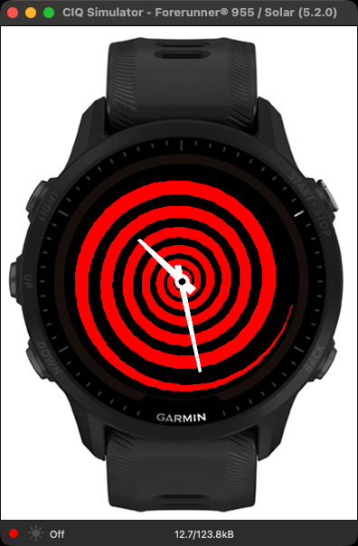
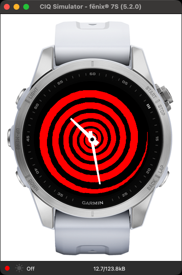
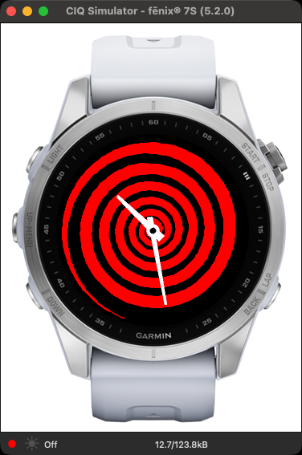
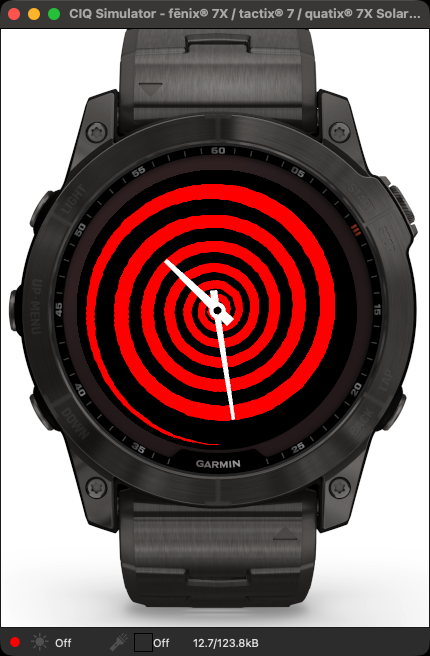
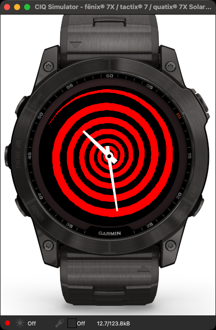
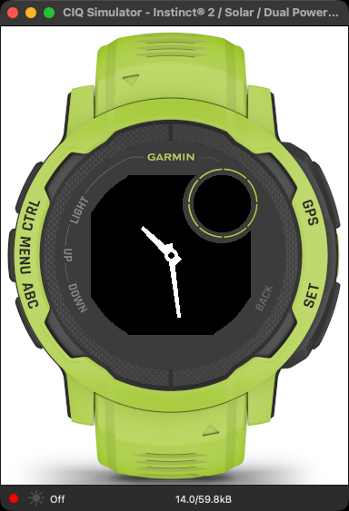